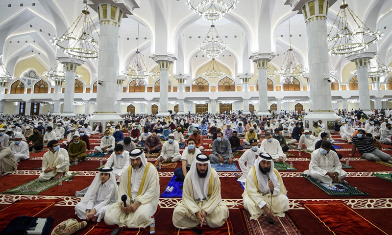

Geografía

Para conocer mejor la nación qatarí debemos hablar sobre su geografía, para entender cómo modifica los datos su posición geográfica, ya que los datos geográficos ayudan a entender la ubicación de una nación.
Lo que llamamos Qatar es el conjunto de la península de Qatar y unas pequeñas islas que se encuentran cerca de la zona. Su localización en el Golfo Pérsico le ha convertido históricamente en un punto estratégico de la zona, especialmente para aquellas naciones que se han interesado por el petróleo o gas natural de la zona. Esta localización es lo que hizo que durante décadas fuera una importante zona de piratas.
Qatar abarca unos 11.437 km2, siendo algo pequeño en comparación con los grandes estados asiáticos, pero poseyendo aún con ello una población gigantesca para la superficie que tiene, con más de 2.5 millones de habitantes.
La mayor parte de Qatar es llana, estando caracterizado por estar cubierta prácticamente en su totalidad por arena. El punto más alto de todo el Estado es Jebel Dukhan, alcanzando los 90 metros sobre el nivel del mar. Este punto es relevante por poseer las mayores posesiones de petróleo de la región, siendo junto al gas natural una de las razones de las grandes riqueza qataris.
Historia

El territorio de Qatar jugó un papel más bien secundario durante gran parte de la historia de Medio Oriente, siendo sobre todo una parada para comerciantes de perlas, pigmentos, telas y otros productos que navegaban el Golfo Pérsico desde y hacia el resto del mundo. El territorio comerció y pasó de manos de los numerosos imperios y clanes que tomaron posesión de la zona. Para el siglo XIX la familia Thani había logrado establecer el control sobre la península, poco después la zona caería bajo la zona de influencia del Imperio Otomano, esta duró poco, al estar Qatar lejos del centro de poder otomano en Anatolia, la península cayó bajo influencia del Reino Unido tras un tratado en 1916.
En los años 30 ya se había descubierto la existencia de yacimientos de petróleo en la zona que comenzaron a ser explotados, principalmente por compañías británicas. Si bien el país comenzaba a modernizarse y el comercio de perlas comenzaba a desaparecer, la prosperidad del petróleo y el gas tardaría en manifestarse físicamente en el país hasta después de la independencia.
En 1971 Qatar obtuvo su independencia del Reino Unido, siendo gobernado por el emir Khalifa bin Hamad Al Thani, quien fue derrocado por su hijo Hamad bin Khalifa Al Thani, fue bajo su reinado que el país comenzó a desarrollarse rápidamente, siendo el horizonte de Doha con sus rascacielos el gran símbolo de la nueva prosperidad del país.
En 2013 con la ascendencia al trono de Tamim bin Hamad Al Thani de manos de su padre, Qatar se ha posicionado como un actor clave en la región, así como la nación más rica del mundo con $128,647 dólares per cápita. Los cambios políticos en Medio Oriente han supuesto un reto para Qatar, que ha apoyado a grupos opositores a las naciones tradicionalmente líderes del mundo árabe: Egipto y Arabia Saudita, lo cual ha causado grandes tensiones. Pero contrariamente a lo podría pensarse por su tamaño y población, Qatar ha demostrado ser un actor capaz de interactuar en términos igualitarios con sus poderosos vecinos. Cada vez más conectado con el mundo, con la sede de un mundial de fútbol aproximándose, Qatar busca cimentar su nueva posición de poder e influencia.
Religión
El islam es la religión predominante y es profesada por el 77,5% de la población de Qatar. Los musulmanes suníes constituyen el 98% de la población musulmana. La mayoría de los no ciudadanos son musulmanes sunitas o chiitas, cristianos, hindúes, budistas, o bahá'is. La mayoría de los trabajadores extranjeros y sus familias viven cerca de los principales centros de empleo de Doha, Al Khor, Mesaieed y Dukhan.
La comunidad hindú es casi exclusivamente india, mientras que los budistas son del sur, sudeste y este de Asia. La mayoría de los bahá'ís provienen de Irán. La religión no es un criterio para la ciudadanía, de acuerdo con la Ley de Nacionalidad. Sin embargo, casi todos los ciudadanos de Qatar son musulmanes sunitas o chiitas, a excepción de los cristianos, los bahá'ís y sus respectivas familias a quienes se les concedió la ciudadanía qatarí.
No hay grupos misioneros extranjeros que operen abiertamente en el país, pero en 2008 el gobierno permitió algunas iglesias para celebrar misa. En marzo de 2008, la catedral católica de Nuestra Señora del Rosario fue consagrada en Doha.
Por lo general no suele haber problemas de convivencia con las minorías religiosas.
Deportes

Los deportes tradicionales de Qatar son las carreras de caballos, de camellos y la cetrería. Los mismos llevan siglos formando parte de la tradición e historia del país, pero en el último tiempo otros deportes han ido tomando más relevancia.
En los últimos años, Qatar invirtió mucho en el fútbol y conformó una selección nacional equiparable a otros equipos internacionales, especialmente en la región del Golfo. En 2019, vencieron a los Emiratos Árabes Unidos en la final del Campeonato de la AFC.
Ahora, el fútbol es el deporte nacional y su popularidad es tal que no hay un barrio en donde no se vea a adultos o niños con una pelota en las manos o en los pies.
Qatar es el primer país árabe en ser anfitrión de la Copa Mundial de la FIFA después de ganar la candidatura en un momento histórico en 2010. La infraestructura del país se ha modernizado para gestionar los millones de aficionados que visitarán dichas tierras.